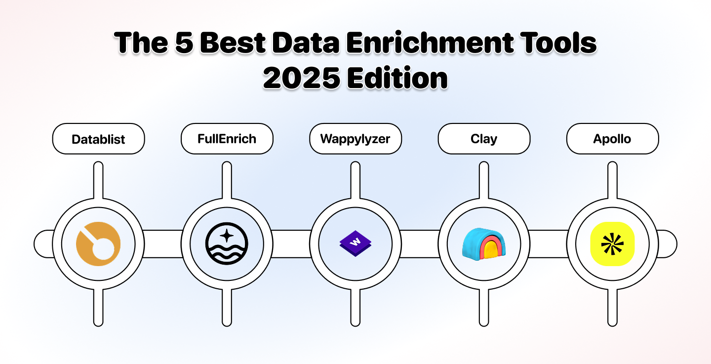
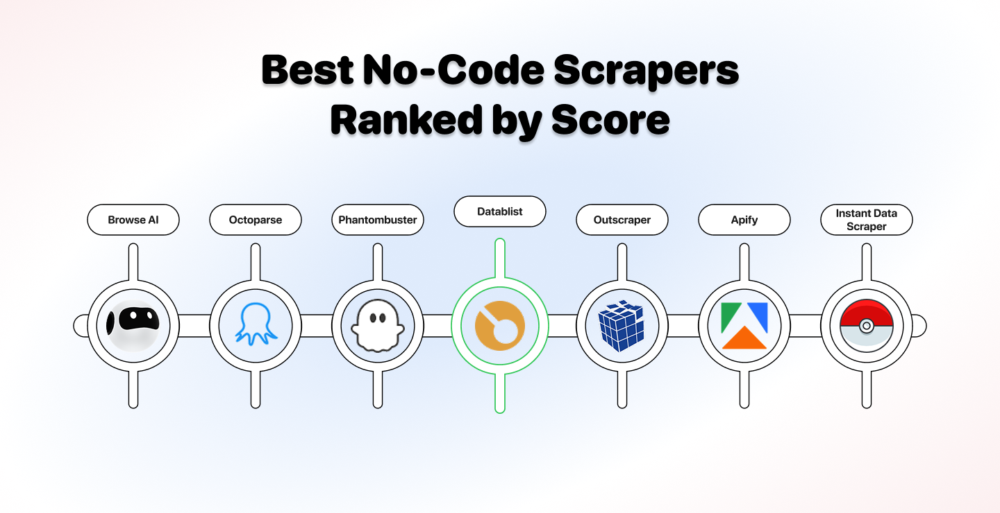
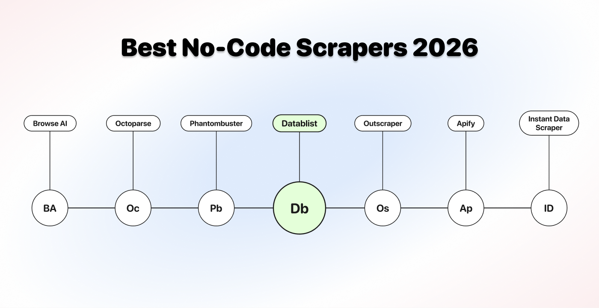
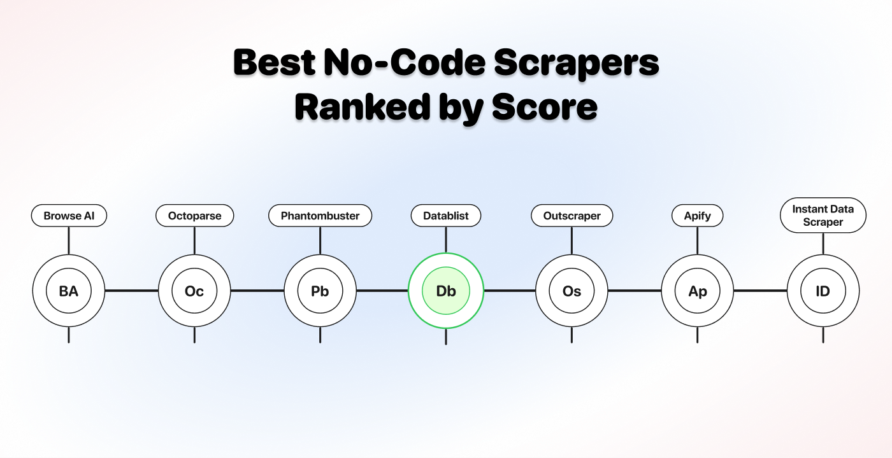
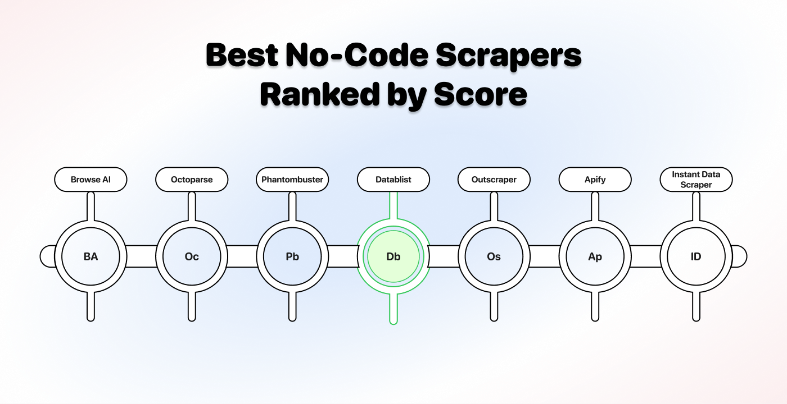
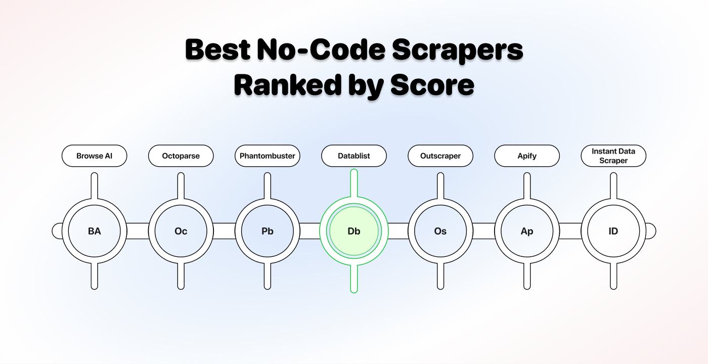
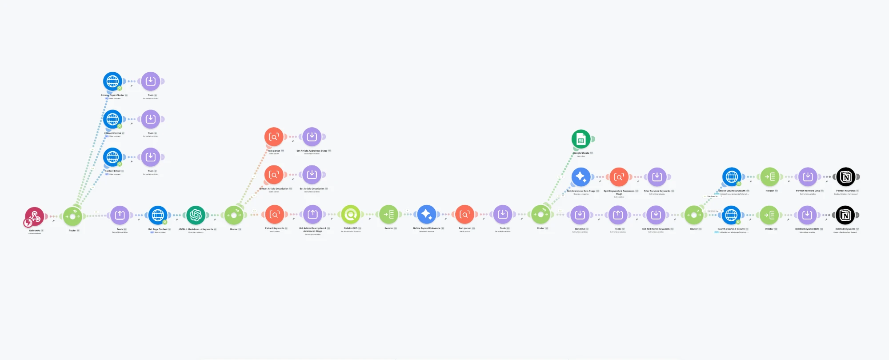
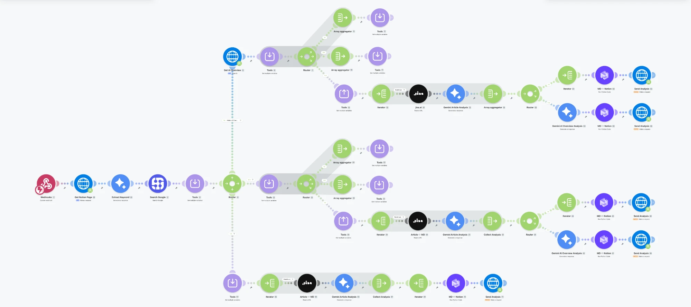
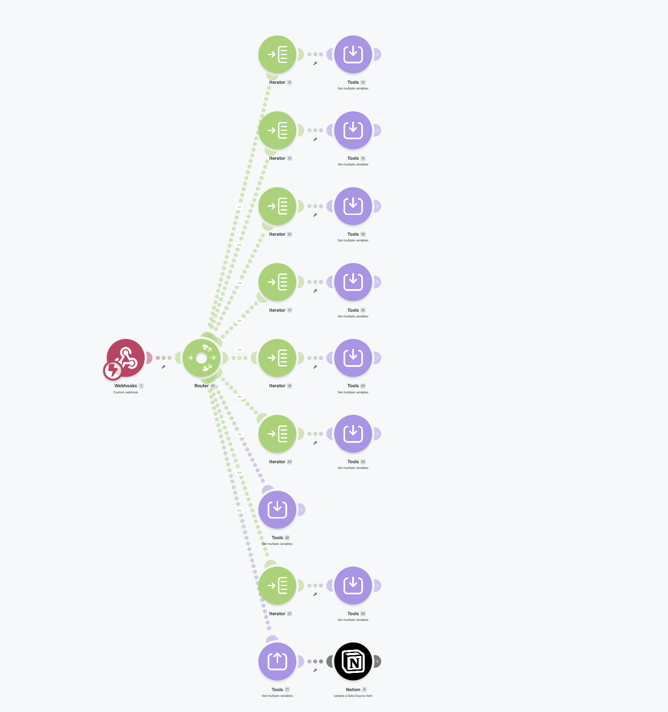

Multi-Agent Content Pipeline
An assembly line of specialized AI agents that takes a topic to a publishable draft in ~20 minutes. Each stage is gated by an independent verifier, with a final human checkpoint.
I build AI workflows, automations, and small tools that turn slow, messy marketing operations into customer acquisition machines. Multi-agent pipelines, no-code automations, and bespoke AI skills, engineered to run with minimal hand-holding.
An assembly line of specialized AI agents that takes a topic to a publishable draft in ~20 minutes. Each stage is gated by an independent verifier, with a final human checkpoint.
25+ purpose-built AI skills and agents for reviewing, editing, planning, and creating long-form content. A reusable toolkit that standardizes quality across a whole team.
A no-code automation that assembles research and analytics data on a trigger (metrics, search insights, screenshots), then hands a clean package to the pipeline.
AI agents that run live web research directly inside a spreadsheet, turning thousands of rows of raw entities into enriched, structured data without leaving the grid.
A design system encoded for an AI: I taught Claude to generate on-brand visual assets from our guidelines. Captured below as a case study, iteration by iteration.
Most teams treat AI design as a slot machine. I treated it as a system. I distilled our brand guidelines into explicit, machine-readable rules: color logic, line weight, composition, layout patterns by asset type, then iterated with the model until it could match the reference. Below: the target on the left, what Claude produced on the right, and the honest trail of attempts underneath.

Reference
Result ✓
01
02
03
04I build no-code automations that wire our tools together and handle the repetitive work end to end: turning ideas into validated keywords, sizing up the competition, and keeping the Notion workspace tidy. Three of them below, each a live Make blueprint you can open.

01
02
03Designing multi-agent systems with clear stage boundaries, checklists, and independent verifiers, so output is reliable, not lucky.
Turning fuzzy human judgment into explicit, testable instructions. Reusable skills that hold quality steady across people and runs.
Make.com scenarios that pull, transform, and route data on triggers, gluing tools together into hands-off pipelines.
Small, sharp utilities and APIs that solve one job well: batch processors and data resolvers built for scale.
Structuring information systems in Notion that teams and agents can both navigate. The backbone for everything above.
Encoding brand and design rules into systems an AI can execute, for consistent visual output without a designer in every loop.
A process that runs without me beats a brilliant one-off. I build for the second hundred outputs, not the first.
Every stage gets an independent check. Trust comes from gates and rubrics, not from the model having a good day.
Automation does the volume; a human makes the final call. The interesting work is designing where that line sits.
Get a working prototype in front of reality fast, then improve it against real failures instead of imagined ones.